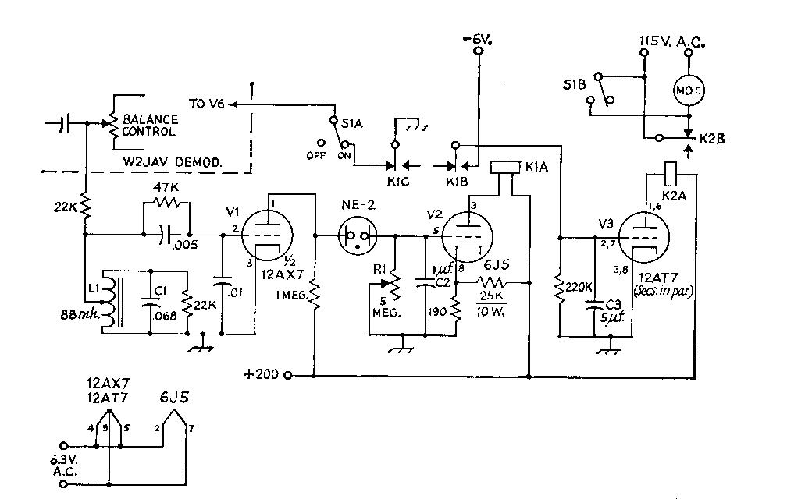

A simple circuit, using two relays and three tubes, for shutting off the motor of the Teletype machine when there is no mark signal present BY L. G. DEDEL, WA2MSY.
DESCRIPTION
My Model 19 has printed quite a few miles of "brag
tapes" which are always generously offered, and seems to
make a special effort to print without errors when informed that
it is in contact with another W2JAV de modulator. We the machine
and I are working with the reliable-tube model, and wonder if we
could be happier switching to the most recent demodulator design;
since the introduction of the "Mainline TT/L", an
astounding number of RTTY enthusiasts have found the time and
energy to build one and applaud its performance.
This article is written for the RTTY'er whose energy was all spent in the construction of his W2JAV, or whose rig looks too beautiful to discard, or whose mind is made up that nothing will ever work better than what he owns now. Well, if you are determined to cling to that pet of yours, at least treat it and yourself to a bit of "automation" which will up-date it and provide increased operating pleasure.
When we modernize a piece of equipment, don't we all first try it the easy way and search through years of accumulated ham magazines to find the pertinent article? Why devote weeks of work, errors and tests to a problem that someone else has already solved? But this "mark-hold plus autostart" circuit was an elusive one, and the older the magazines the less they contained about RTTY in general. I dare assume that no similar circuitry has been described before. The aim of the circuit, Fig. 1, is to create an artificial mar condition to prevent the printer from running "open" in the absence of an RTTY signal, and eventually to shut off the motor as well.
Since space for expansion is hardly available on your demodulator chassis it would be smart to assemble a plug-in module, whose dimensions must be left to the requirements of the constructor. I obtained a 5-inch length of 4 x 2 x 1/8 inch aluminum angle and mounted a male octal plug on the 2-inch side to mate with an octal socket installed on the chassis. All components were then mounted on the large face of the angle.
The RTTY signal for the module was picked up at the arm of the 50,000-ohm balance control through a 22,000 ohm isolating resistor. This connection had no adverse effects on the detector stages of the W2JAV demodulator. The 88-mh. toroid filter, LC, being sharply tuned to 2125 cycles, will now separate the mark tone from unwanted audio frequencies, which will be severely attenuated. A grid-leak detector, V1 is used to rectify the signal, and at filter resonance the rectified signal at the grid was 4 volts negative. (A 0.01 microfarad capacitor from grid to ground by passes remaining AC from noise pulses which get past the filter without attenuation.) The -4 volts at the grid will cut off the 12AX7, V1 raising the voltage on the plate sufficiently to fire the NE-2 neon bulb. C2 then becomes positively charged and relay tube V2 which was cut off by the fixed bias from a voltage divider, now conducts. This closes relay K1 thereby disconnecting the grid of the 6AQ5 V6 in the W2JAV) from ground, and the demodulator is set up for reception.
K1 has now, in its closed position, connected a -6 volt bias supply to the grids of the 12AT7, cutting off the plate current in this tube. With the interruption of current, K2 will drop out and will now, through its back contact, close the 115- volt circuit for the printer motor, and the whole system is in operation.
On reception of a space signal, or noise pulses in absence of a signal, the tuned detector filter will no longer supply that high negative potential to the grid continuously, and V2 is no longer cut off: plate current flows, lowering the voltage at the plate, and the NE-2 stops firing. Some noise pulses will occasionally hit the cutoff value, but their duration is too short to charge C2. The positive voltage at the grid of V2 now discharges through R1 and this tube stops conduct ing. K1 drops out, grounding the grid of V6 and creating an effective mark-hold condition. The other pole of K1 becomes disconnected from the -6 volt supply, and the charge on C3 bleeds off. V3 begins to conduct and relay K2 closes, thereby opening the 115-volt circuit to the motor; the whole system is now shut off.

Fig. 1 Circuit of the mark-hold autastart
system for the W2JAV converter. Except asindicated, fixed
resistors are 1/2 watt composition. Capacitances are in
microfarad.; except as listed below, capacitors are ceramic.
Negative 6-volt supply may be obtained from dry cells or other
convenient source.
|
|
Now for some pin-point information: The response of the mark filter at the detector is amazingly sharp and will deprive the grid of its -4 volts within lot) cycles either side of resonance. If you wish to broaden the filter, lower the loading resistor across the filter from 22K to a value of, say, 18K. Don't go too low, because the negative voltage at the grid will be lowered correspondingly.
There is a delay of approximately 3 to 5 seconds before the system begins to operate on the reception of an RTTY signal. The delay before the mark-hold feature takes over can be varied by means of R1, but should not be less than 3 seconds as the resistance of the potentiometer becomes so low as to make it impossible for C2 to accumulate any charge. The time constant at the grid of V3 is not at all critical. The com bination of 5 microfarad and 220K provides a delay of about 25 seconds before the printer motor shots off.
The manual switch, S1 is an absolute necessity for disconnecting the adapter from the demodulator. Printing on space only with the module in the circuit would be impossible, as the system would simply shut down. The sys tem is capable of handling narrow shift equally well.
The values of the remaining components are fairly critical, and their suggested values should be adhered to. The only item not available in my junk box or on the surplus market was K1, K2 can be obtained at negligible cost from surplus houses. Be sure to resonate your mark filter at exactly 2125 cycles or your detector grid voltage will not be sufficiently high to work the system at optimum efficiency.
I have worked with this adapter in my de modulator for some months now, and while I don't claim that it could not be improved upon, it has been working better than expected; as a matter of fact, it works without flaw, at least as far as RTTY signals are concerned. A CW signal copied exactly on mark will activate your printer in rhythm, but the printer will not run open as on space. No amount of atmospheric noise, regardless of its amplitude, will cancel the mark-hold condition.
You'll be pleased with the performance of this module and will wonder how you managed to bear the noise of an open machine all these years!